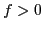
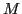
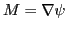
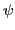
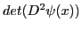
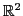

Next: About this document ...
Justin, W.L. Wan
Multigrid Method for Solving Elliptic Monge-Ampere Equations Arising from Image Registration
University of Waterloo
200 University Avenue West
Waterloo
ON N2L 3G1
Canada
jwlwan@uwaterloo.ca
Ashmeen Soin
The Monge-Ampère equation (MAE) is a nonlinear second order partial
differential equation, which can be written as:
where 
so that the equation is elliptic with a unique convex solution.
Monge-Ampère equations arise in many areas such as differential geometry
and other applications. In image registration, one is interested in
transforming one image to align with another image. One approach is based on
the Monge-Kantorovich mass transfer problem. The goal is to find the optimal
mapping 
which minimizes the Kantorovich-Wasserstein distance. The
optimal mapping can be written as

, where 
satisfies
the following Monge-Ampère equation
where  and
and  are the given images.
Here
are the given images.
Here

denotes the determinant of the Hessian of
.
In

, it is equivalent to (![[*]](file:/usr/share/latex2html/icons/crossref.png) ).
In this talk, we will present a multigrid method for solving the
Monge-Ampère equation. We will discuss the discretization of the
nonlinear equation and the issues of viscosity solutions and monotone
finite difference and finite element schemes. We will then present a
relaxation scheme which is a very slow convergent method as a standalone
solver but it is very effective for reducing high frequency errors. We will
adopt it as a smoother for multigrid and demonstrate its smoothing
properties. Finally, numerical results will be presented to illustrate
the effectiveness of the method.
).
In this talk, we will present a multigrid method for solving the
Monge-Ampère equation. We will discuss the discretization of the
nonlinear equation and the issues of viscosity solutions and monotone
finite difference and finite element schemes. We will then present a
relaxation scheme which is a very slow convergent method as a standalone
solver but it is very effective for reducing high frequency errors. We will
adopt it as a smoother for multigrid and demonstrate its smoothing
properties. Finally, numerical results will be presented to illustrate
the effectiveness of the method.
Next: About this document ...
Copper Mntn
2013-01-30